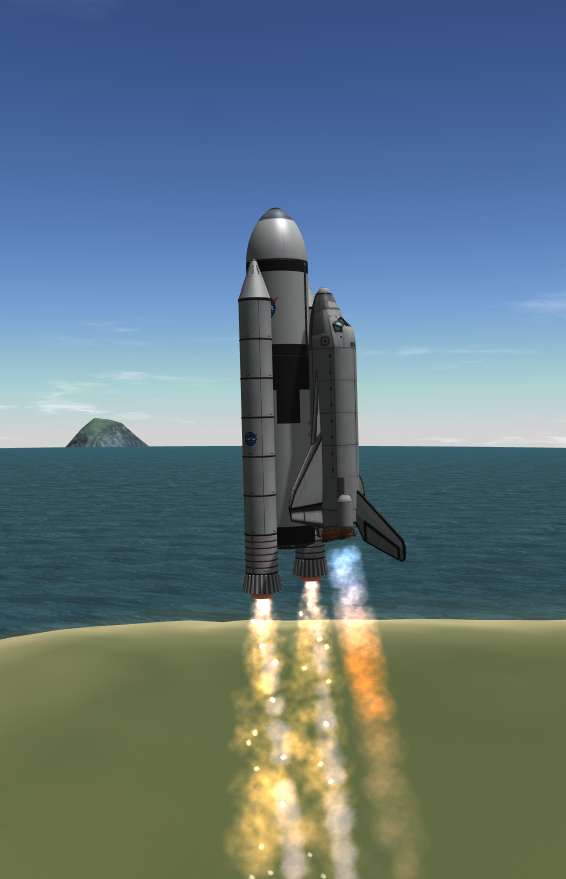
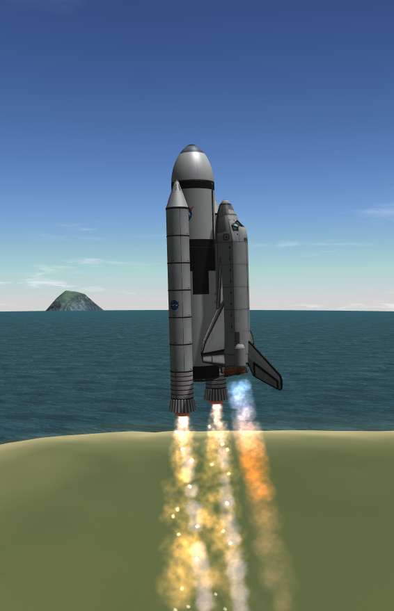
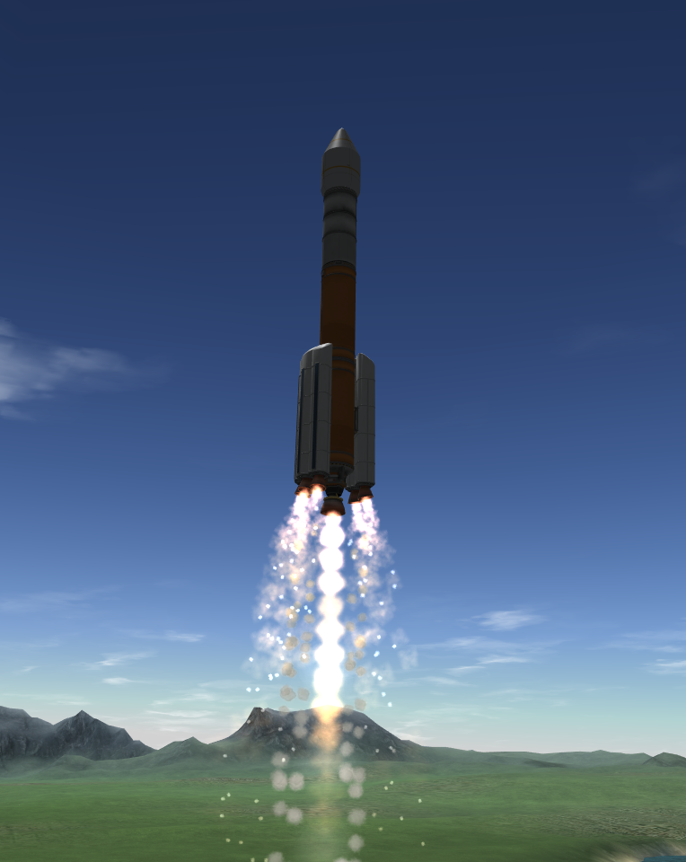
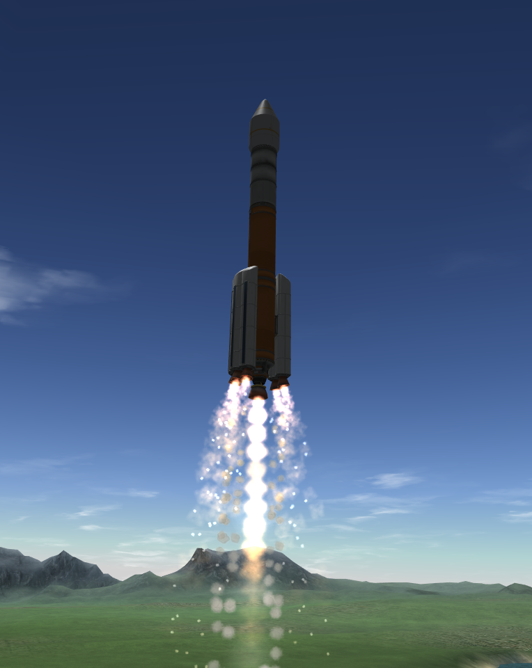
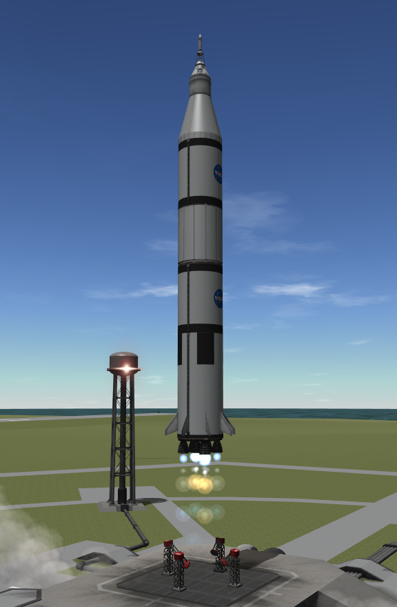
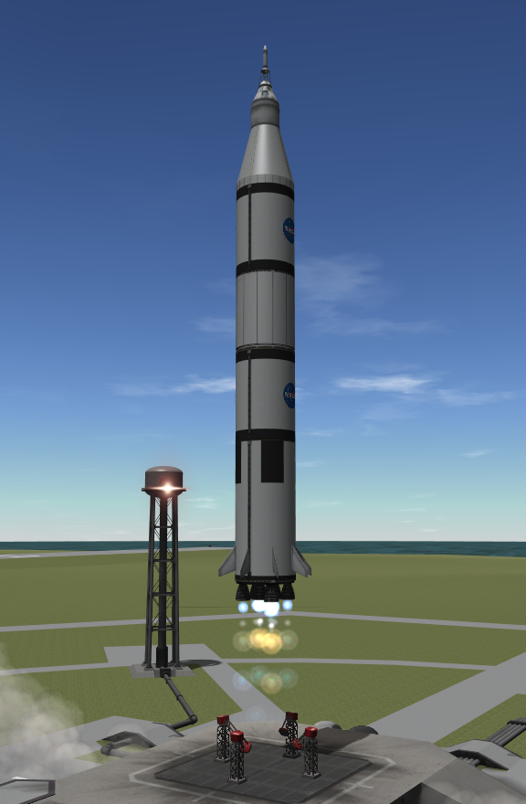

About me
I'm Josh Kernick; I was born and grew up in London and have just turned 18. I have 8 GCSE, including an A in maths and physics and a B in English. My first encounter with programming was using Scratch in year 7, but my school didn't really offer much computing beyond the ICT course.
I first got into programming when I chose computing for A-levels along with maths and physics. I found computing super interesting and got into programming to the of my other subjects. I got an A in my computing AS but my other grades meant I would need to repeat the year. I decided to leave formal education and seek work as a novice programmer. Since September I have been teaching myself, focusing on Python and styles of programming - such as object oriented. Recently I have also been looking at HTML, CSS and JavaScript.
In looking for apprenticeships and other ways to study I came across Founders and Coders. I really like that the course aims to place graduates in employment and the course covers many aspects of programming that I've been struggling to study fully on my own. I also look forward to working in a team with people who are as interesting in programming as I am. My father tells me that teaching something is the best way to learn it - and he is always right, so the course structure involving both learning and teaching will clearly give me what I need to get my foot into the world of work.
 

 

 

{kind=link}